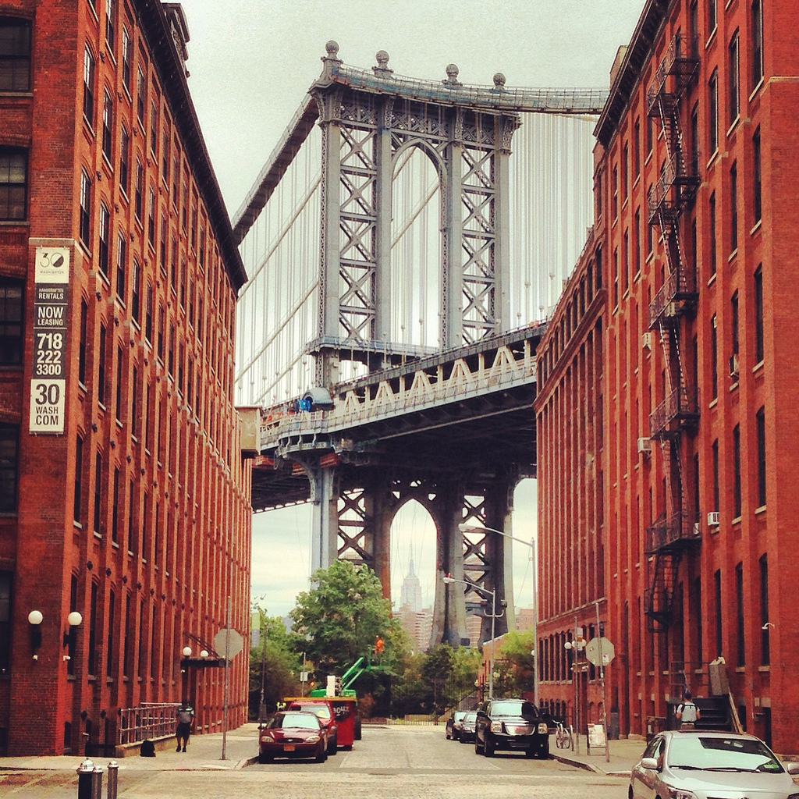

Plymouth Street DUMBO (een afkorting van het Engelse Down Under the Manhattan Bridge-viaduct. is een gebied in het noordwesten van Brooklyn, New York. Het district bestaat uit twee blokken, waarvan de eerste zich tussen de bruggen Manhattan en Brooklyn bevindt, en de tweede gaat verder dan de brug van Manhattan naar de regio van de Azijnheuvel.
